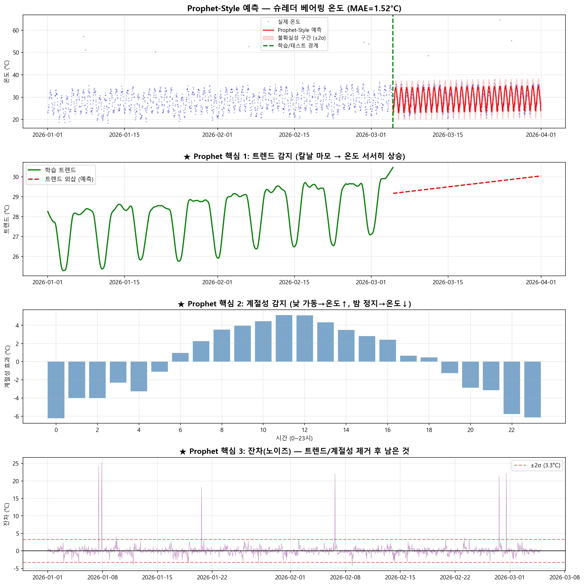

Prophet 시뮬레이션 결과 상세 설명
4개의 그래프를 하나하나 읽는 법 — 초보자용 완전 가이드
0 Prophet이란?
체중 = 기본 체중(트렌드) + 식사 후 증가(일간 패턴) + 측정 오차(노이즈)
"기본 체중이 점점 늘고 있다"는 것을 알려면, 식사 후 증가와 측정 오차를 빼야 합니다. Prophet이 하는 일이 바로 이것입니다!
센서: 베어링 온도 1개만 사용 (단변량)
기간: 90일 (2,160건, 시간 단위)
⚠️ Prophet은 온도 하나만 봅니다. 진동, 전류는 사용 불가! (단변량 모델의 한계)
전체 예측 그래프 — "AI가 온도를 맞춰보기"

- 파란 점(···) = 실제 측정된 온도 데이터 (90일간)
- 빨간 선(—) = AI가 예측한 온도
- 분홍 영역 = 불확실성 구간 (95% 확률로 이 안에)
- 초록 점선(│) = 학습/테스트 경계
읽는 방법
"평균적으로 예측이 실제와 1.52도 차이납니다". 베어링 온도 25~35°C 범위에서 1.52°C 오차는 괜찮은 수준입니다.
트렌드 — "칼날 마모로 온도가 서서히 상승"
"온도가 올라가고 있는 건가, 아니면 그냥 이리저리 왔다 갔다 하는 건가?"
→ 트렌드 그래프를 보면 "아, 전체적으로 올라가고 있구나!" 확인 가능
실제 온도 데이터를 그냥 보면: 위아래로 계속 왔다갔다 → 올라가는 건지 모르겠
트렌드를 분리해서 보면: "아, 전체적으로 올라가고 있구나!" → 명확한 판단 가능
계절성 — "낮에 가동하면 온도↑, 밤에 정지하면 온도↓"
매일 아침 8시에 교통량이 많아지고, 새벽 3시에는 택시도 없습니다. 이것이 "계절성"입니다. 슈레더도 매일 낮에 가동하면 온도가 올라가고, 밤에 내려갑니다.
오전 10시에 35°C → 계절성 +5°C 포함 → 실제 기저 30°C → "정상" ✔
새벽 3시에 35°C → 계절성 -3°C인 시간 → 실제 기저 38°C! → "비정상!" ⚠️
잔차(노이즈) — "트렌드/계절성을 빼고 남은 것"
시험 정답(트렌드+계절성)을 알고 있는데도 맞추지 못한 부분이 잔차입니다. 잔차가 작으면 "모델이 데이터를 잘 설명하고 있다"는 뜻입니다.
"트렌드와 계절성을 제거한 후에도 평균 1.65°C의 변동이 남아있다"
이 값을 더 줄이려면 = 다변량 모델(LSTM, TFT)이 필요 (진동, 전류 추가 활용)
∑ 4개 그래프의 관계
➔ Prophet의 한계 → 왜 LSTM이 필요한가
❌ Prophet이 못 하는 것
- 온도만 봄 — 진동, 전류를 함께 볼 수 없음
- "온도↑ + 진동↑ + 전류↑" 동시 변화 감지 불가
- "지금 정상인가 이상인가" 판단 불가 (예측만 함)
✅ LSTM이 할 수 있는 것
- 온도+진동+전류 3개를 동시에 분석
- 3개 센서의 동시 변화 패턴 감지
- "정상 패턴과 다르다" → 이상 탐지!
Prophet은 "내일 온도가 몇 도?"에 답하고, LSTM은 "지금 정상인가?"에 답합니다. 둘 다 필요하며, 서로 다른 목적에 사용합니다.